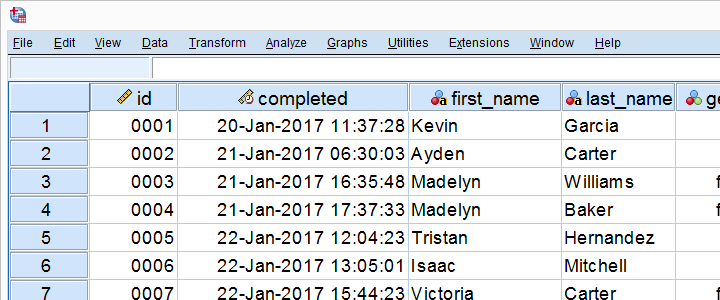
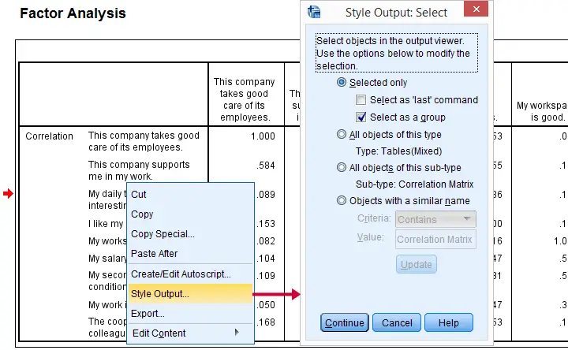
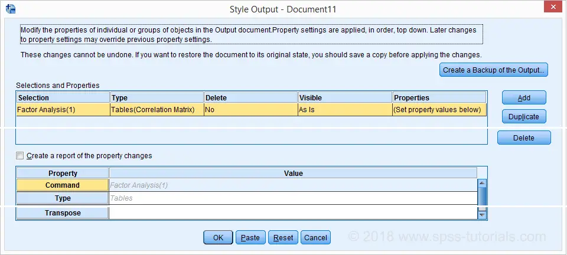
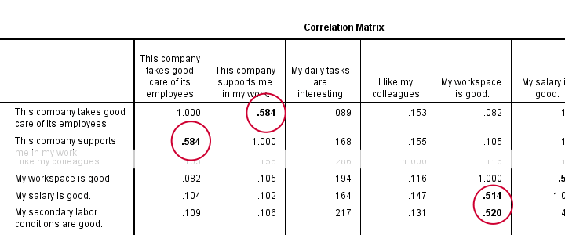
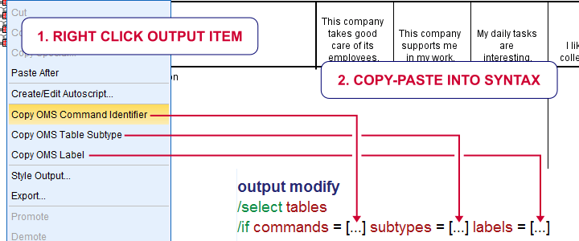
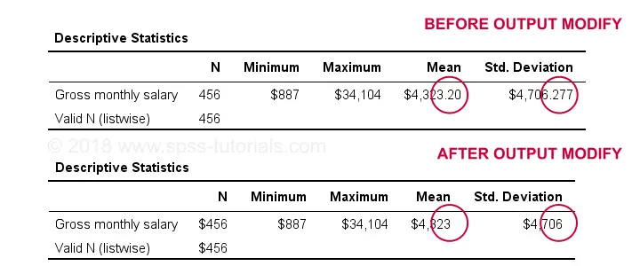
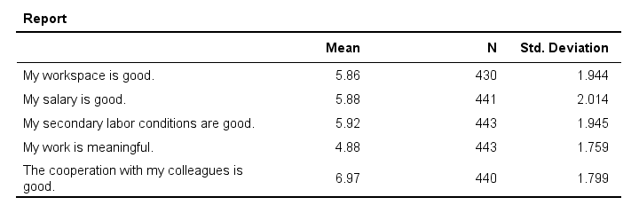
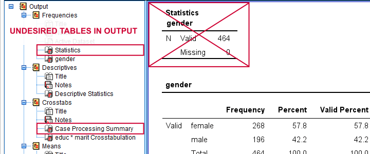
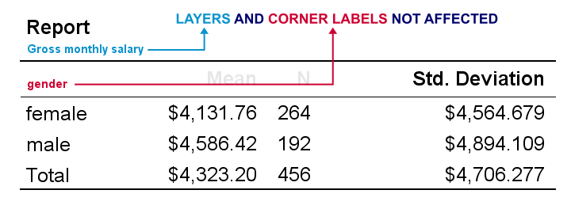
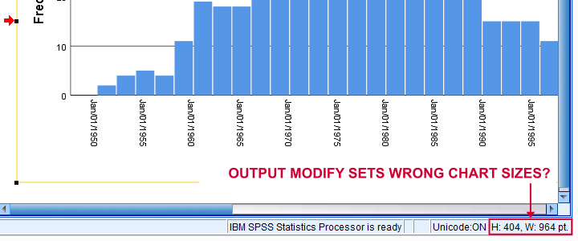

SPSS 输出修改 – 教程与示例
作者：Ruben Geert van den Berg，归档于 SPSS A-Z
本教程包含以下内容：
- 将绝对相关系数 > 0.5 的值加粗
- 设置输出表格的小数位数
- 转置一个或多个输出表格
- 删除选定的输出项
- 设置输出表格的字体大小和样式
- 设置图表的精确尺寸
所有示例都需要 SPSS 22 或更高版本。我们将使用 bank_clean.sav (截图如下) 作为贯穿本教程的数据集。

OUTPUT MODIFY - 是什么以及为什么？
OUTPUT MODIFY 是一个 SPSS 命令，它通过语法编辑一个或多个 SPSS 输出项，主要是表格和图表。OUTPUT MODIFY 在 SPSS 22 版本中引入，与 Python 一起，是 SPSS 中最重要的省时工具之一。OUTPUT MODIFY 可以从菜单访问（我们稍后会介绍），但我们建议复制粘贴编辑或直接输入语法。
OUTPUT MODIFY 的替代方案
在使用 OUTPUT MODIFY 之前，有 3 种在创建输出项之后编辑它们的方式：
- 手动：双击输出项后，可以编辑其大多数属性。对于某些调整，这仍然是唯一合理的方法。但应尽量避免，因为它非常耗时且不可重复。
- SPSS 脚本：许多用户不了解，SPSS 包含一种称为 SaxBasic 的 脚本语言，它与 VBA 相关。SPSS 脚本已被弃用，取而代之的是 SPSS 14 版本中引入的 Python。
- Python 脚本：这是编辑 输出查看器 (output viewer) 中几乎所有内容的最强大选项，但可能需要陡峭的学习曲线。如果
OUTPUT MODIFY无法完成，Python 脚本可能会成功。
除了使用 OUTPUT MODIFY 之外，您还可以在创建输出项之前编辑它们：
- 变量格式 - 使用 FORMATS 或 ALTER TYPE 设置 - 主要决定了统计量在输出表格中的显示方式。
- 您可以在创建图表之前设置图表模板，从而将样式应用于图表。在创建图表之后应用图表模板（手动、使用 Python 脚本或使用
OUTPUT MODIFY）通常不太方便。 - 为了创建更漂亮的表格，请在创建表格之前设置 表格外观 (tablelook)。同样，您可以在创建表格之后应用表格模板，但这通常不太方便。
- OMS 可以完全阻止输出项的创建。一个例子是 CROSSTABS 命令附带的通常不需要的“个案处理摘要 (Case processing summary)”表格。
从 SPSS 菜单中使用 OUTPUT MODIFY
首先，让我们从下面的语法运行一个快速的 相关 (correlation) 矩阵。同样，我们将使用 bank_clean.sav 作为贯穿本教程的数据集。
***创建没有 N 或显著性的干净相关矩阵。**
FACTOR
/VARIABLES q1 TO q9
/PRINT CORRELATION.现在，让我们尝试通过从菜单运行 OUTPUT MODIFY 来将所有绝对相关系数 > 0.50 的值加粗。我们的第一个选择是导航到 U tililities  Style Output，但这仅在您位于输出查看器 (output viewer) 窗口中时才可用。我们的第二个选择是在右键单击输出项后选择 Style Output。无论哪种情况，我们都会首先看到如下所示的输出选择对话框。
Style Output，但这仅在您位于输出查看器 (output viewer) 窗口中时才可用。我们的第二个选择是在右键单击输出项后选择 Style Output。无论哪种情况，我们都会首先看到如下所示的输出选择对话框。

现在，您可以选择要修改的输出项。个人而言，我认为这里有太多的选项，而且我不清楚它们的含义。我发现更容易在语法中进行选择。单击 C ontinue 会打开主对话框。

主 OUTPUT MODIFY 对话框允许您指定对输出项元素的修改。我将跳过细节，因为 - 同样 - 我发现从语法中执行此操作更容易。无论如何，我可以从菜单粘贴的最佳语法如下所示。
OUTPUT MODIFY 示例 - 从菜单粘贴
***从 SPSS 菜单粘贴的 OUTPUT MODIFY 语法示例。**
OUTPUT MODIFY NAME=Document7
/REPORT PRINTREPORT=NO
/SELECT TABLES
/IF COMMANDS=["Factor Analysis(1)"] LABELS=[EXACT("Correlation Matrix")] INSTANCES=[1]
/DELETEOBJECT DELETE=NO
/OBJECTPROPERTIES VISIBLE=ASIS
/TABLECELLS SELECT=[CORRELATION] SELECTDIMENSION=COLUMNS SELECTCONDITION="Abs(x)>=0.5"
STYLE=REGULAR BOLD APPLYTO=CELL.OUTPUT MODIFY - 语法问题
我们刚刚粘贴的语法是彻头彻尾的愚蠢，因为它在大多数情况下都行不通；NAME=Document7 将该命令限制为名为“Document7”的输出窗口。这是我的表格现在所在的位置，但明天当我继续处理我的项目时可能就不是了。更不用说当同事或客户试图复制我的工作时。这首先就违背了使用语法的全部意义。
此外，该语法太长且复杂而无法手动编写，但其中大部分根本不起作用。现在，SPSS 中的大多数事情（包括 OUTPUT MODIFY）最好通过编写简单、干净的语法来完成。可悲的是，此粘贴的语法是一个非常糟糕的示例。这也适用于许多其他命令。
最后，"Abs(x) ≥ 0.5" 包括对角线元素，因为 abs(1.000) > 0.5。我需要的是类似 “Abs(x) ≥ 0.5 & Abs(x) < 1" 的东西。我试图从菜单完成此操作。我失败了。
简而言之，我认为粘贴的语法糟透了，我也不喜欢 OUTPUT MODIFY 对话框。所以现在让我们研究一些以正确方式完成事情的例子。
1. 将相关系数 > 0.5 的值加粗
***创建没有 N 或显著性的干净相关矩阵。**
FACTOR
/VARIABLES q1 TO q9
/PRINT CORRELATION.
***将绝对相关系数 > 0.5 的值加粗。**
OUTPUT MODIFY
/SELECT TABLES
/IF COMMANDS = ['factor analysis'] SUBTYPES = ['Correlation Matrix']
/TABLECELLS SELECT = [body] SELECTCONDITION = ["0.5 < abs(x) < 1"] STYLE = BOLD.结果

说明
对于处理活动输出窗口中的所有表格，只需使用 OUTPUT MODIFY /SELECT TABLES...。或者，通过添加 /IF 子命令来指定一些条件，如 OUTPUT MODIFY /SELECT TABLES /IF COMMANDS = ['FACTOR ANALYSIS']。只有满足所有条件的表格才会被处理。令人困惑的是，COMMANDS 并不指创建输出的命令（在本例中为 FACTOR）。
相反，COMMANDS 指的是 OMS 命令标识符，您可以从输出大纲中复制粘贴。SUBTYPES 和 LABELS 也是如此，如下所示。

现在，我们表格的 BODY (主体) 仅包含 相关 (correlation)。如果设置一些条件，我们将它们称为 x，如 x > 0.5。那么如何设置介于 0.50 和 1 之间的绝对相关系数的样式（不包括 1）？显而易见的方法似乎是 abs(x) > 0.5 & abs(x) < 1，但它不知何故不起作用。相反，0.5 < abs(x) < 1 可以完成这项工作。但是，这是一种在 SPSS 中制定此类条件的非常规方式。
最后但并非最不重要的一点是，OUTPUT MODIFY 似乎无法撤消加粗操作。据我所知，下面的语法应该有效，但它不起作用。
***尝试撤消加粗（不起作用）。**
OUTPUT MODIFY
/SELECT TABLES
/IF COMMANDS = ['factor analysis'] SUBTYPES = ['Correlation Matrix']
/TABLECELLS SELECT = [body] SELECTCONDITION = ["0.5 < abs(x) < 1"] STYLE = REGULAR.2. 设置输出表格的小数位数 - 示例 I
***设置输出表格的小数位数 - 示例 I。**
DESCRIPTIVES SALARY.
***将上一个表格（无论是什么）中所有单元格的格式设置为 dollar1（零个小数位）。**
OUTPUT MODIFY
/SELECT TABLES
/IF INSTANCES = [last] /***SELECT LAST PIVOT TABLE IN OUTPUT***/
/TABLECELLS SELECT = [body] FORMAT = 'dollar1'.结果

设置输出表格的小数位数 - 示例 II
***设置输出表格的小数位数 - 示例 II。**
DESCRIPTIVES q1 TO q4.
DESCRIPTIVES q5 TO q9.
***为输出中所有描述性表格的第 4 列和第 5 列设置 2 个小数位。**
OUTPUT MODIFY
/SELECT TABLES
/IF COMMANDS = ['descriptives'] /***SELECT ALL TABLES IN OUTPUT CREATED BY DESCRIPTIVES COMMAND***/
/TABLECELLS SELECT = [POSITION(4) POSITION(5)] SELECTDIMENSION = COLUMNS FORMAT = 'f3.2'.
***注意："[POSITION(4) POSITION(5)] SELECTDIMENSION = COLUMNS" 选择第 4 列和第 5 列。**3. 转置一个或多个输出表格
***运行 2 个基本均值表。**
MEANS q1 TO q4.
MEANS q5 TO q9.
***仅转置最后一个均值表，但不包括个案处理摘要。**
OUTPUT MODIFY
/SELECT TABLES
/IF COMMANDS = ['means(last)'] SUBTYPES = ['report'] /*** SELECT ONLY "REPORT" (DESCRIPTIVES) TABLE CREATED BY LAST MEANS COMMAND ***/
/TABLE TRANSPOSE = YES.结果

说明
此示例显示了如何创建比使用 DESCRIPTIVES 更好的描述性统计表格。使用 MEANS 代替可以获得更好的表格格式，并允许报告 中位数 (median) 以及 偏度 (skewness) 和 峰度 (kurtosis)，而无需它们的标准误差。有关此的更多信息，请参见 SPSS DESCRIPTIVES - 问题和修复。
4. 删除选定的输出项
***创建“大五”表。**
FREQUENCIES GENDER.
DESCRIPTIVES SALARY.
CROSSTABS EDUC BY MARIT.
MEANS SALARY BY GENDER.
CORRELATIONS SALARY WITH WHOURS.
***删除所有不需要的表格：频率表的“统计”以及均值和描述性统计的“个案处理摘要”。**
OUTPUT MODIFY
/SELECT TABLES
/IF SUBTYPES = ['case processing summary','statistics']
/DELETEOBJECT DELETE = YES.结果

说明
如果您需要向未安装 SPSS 的客户进行一些“快速而肮脏”的报告，此示例非常方便。在这种情况下，删除所有不需要的输出并将整个输出文档转换为 PDF。您可以通过从 F ile Expor t （仅在输出窗口中可用）创建一个 OUTPUT EXPORT 命令来完成此操作。
或者，清理您的输出窗口并将所有内容一次性转换为 .rtf（富文本格式，“ WORD ”）文件。由于这将包括所有表格和图表，因此您可以将其用作最终报告的良好起点。
5. 设置输出表格的字体大小
注意：这对于 FREQUENCIES、DESCRIPTIVES 和 CORRELATIONS 可以正常工作，而对于 MEANS 和 CROSSTABS 仅部分有效。
***创建“大五”表。**
FREQUENCIES GENDER.
DESCRIPTIVES SALARY.
CROSSTABS EDUC BY MARIT.
MEANS SALARY BY GENDER.
CORRELATIONS SALARY WITH WHOURS.
***将字体大小设置为 25 磅。**
OUTPUT MODIFY
/SELECT TABLES
/TABLECELLS SELECT = [body,headers,title] FONTSIZE = 25.结果

正如我们所看到的，OUTPUT MODIFY 似乎无法修改角标签和层维度。一种解决方法是创建一个 表格外观 (tablelook)，该表格外观为所有表格元素设置字体大小。接下来，OUTPUT MODIFY 可以将此模板应用于一个、多个或所有输出表格，如下所示。
***为所有表格设置表格模板，其中所有元素的字体均为 15 像素。**
OUTPUT MODIFY
/SELECT TABLES
/TABLE TLOOK = "C:\Program Files\IBM\SPSS\Statistics\25\Looks\Original-15pt.stt".
***如果表格模板位于默认的“Looks”文件夹中（例如“C:\Program Files\IBM\SPSS\Statistics\25\Looks\”），则可以使用简写。**
OUTPUT MODIFY
/SELECT TABLES
/TABLE TLOOK = "Original-15pt".
***不要对输出窗口中的任何表格使用表格模板。**
OUTPUT MODIFY
/SELECT TABLES
/TABLE TLOOK = NONE.请记住，CD 会忽略 TLOOK 设置，如果您的客户必须在自己的计算机上复制内容，这将非常烦人。您需要在此处使用绝对路径，并在每次移动项目文件夹时调整这些路径。
或者，如果将表格模板放在默认的 looks 文件夹中（例如 C:\Program Files\IBM\SPSS\Statistics\24\Looks），则可以使用简写。但是，通常您不希望在那里开发、存储和备份任何项目文件。
6. 设置图表的精确尺寸
***创建出生日期 (dob) 的基本直方图。**
FREQUENCIES DOB
/FORMAT NOTABLE
/HISTOGRAM.
***将图表大小设置为 720 x 300 磅（结果为 964 x 404 磅）。**
OUTPUT MODIFY
/SELECT CHARTS
/OBJECTPROPERTIES SIZE=POINTS(720,300).结果

显然，OUTPUT MODIFY 设置的图表大小与指定的不同。要设置正确的图表大小，请尝试我们的 SPSS - 设置图表大小工具。